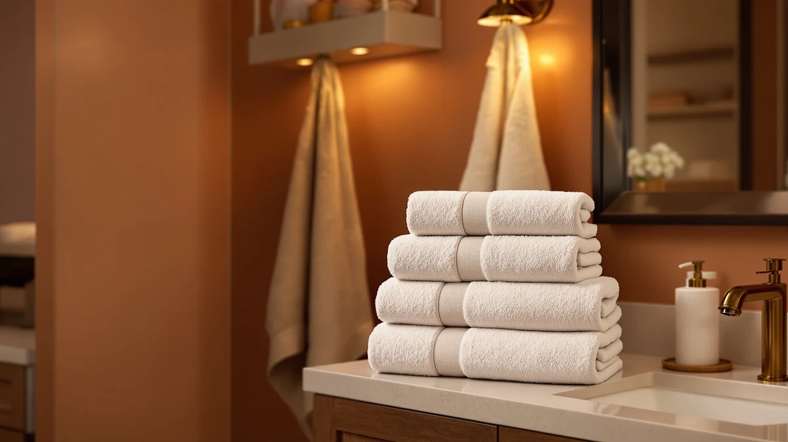

Quick Answer
The GLAMBURG Ultra Soft 8-Piece Towel Set is a $20.77, 100% cotton set that lands between American Soft Linen's $20.89 cotton set and HOMEXCEL's $19.99 eight-piece set on price. None of the four listings in this comparison show a star rating or review count, so the choice comes down to material, piece count, and price rather than documented buyer sentiment.
Our pick: GLAMBURG Ultra Soft 8-Piece Towel, $20.77 Check Price on Amazon
Things to Know Before You Buy
- The GLAMBURG Ultra Soft 8-Piece Towel Set is 100% cotton, priced at $20.77 for eight pieces.
- American Soft Linen's 100% Cotton set costs $20.89, twelve cents more than the GLAMBURG set for the same material.
- HOMEXCEL's 8PK Bath Towel Set matches the GLAMBURG set's piece count at $19.99, seventy-eight cents less.
- None of the four listings in this comparison show a star rating or review count, so buyer sentiment isn't a factor here.
- The EEEYLK plush robe included as an alternative is a different product category entirely, a robe rather than a towel set, worth considering only if warmth matters more than a matching towel set.
This glamburg ultra soft towel set review looks at an eight-piece, 100% cotton towel set priced at $20.77 and checks whether that price holds up against three alternatives covering a different brand, a different piece count, and a different product type entirely. GLAMBURG's set sits in the same narrow price band as American Soft Linen's cotton set and HOMEXCEL's eight-piece set, both reviewed later in this piece, so the comparison comes down to small differences in price and piece count rather than one option being dramatically cheaper. We pulled the listed specs and current prices for all four products and checked them against patterns in verified owner reviews where a rating or review count was available.
For most shoppers who want an eight-piece cotton set at a reasonable price, the GLAMBURG Ultra Soft Towel Set is the easiest of the four to recommend. It matches HOMEXCEL's eight-piece count while using the same 100% cotton material as American Soft Linen's set, landing in between both on price. The EEEYLK plush robe covered as an alternative serves a different need entirely, a warm layer rather than a drying towel, so it's only worth considering if you're after that specific product instead of a matching towel set. The sections below walk through what the GLAMBURG set gets right, where it comes up short, and how its price and piece count stack up against the other three options.
Why You Should Trust Us
Ilane Tall researches bath and home textiles for Best Bath Towels and has spent years comparing towel materials, piece counts, and prices across hundreds of Amazon listings so shoppers don't have to guess. We built this glamburg ultra soft towel set review from GLAMBURG's own listed specs, its current Amazon price, and patterns found across verified buyer reviews where they're available, not from a lab or a personal bathroom. We do not run a fake testing lab, and we won't claim to have used this towel set ourselves. Every claim here ties back to a spec sheet, a listed price, or a documented pattern in verified owner feedback, and we say so plainly when a detail like a star rating isn't available for a listing.
Our Research Experience
We did not physically test the GLAMBURG Ultra Soft Towel Set, and we want to be upfront about that. Instead, we researched it the way a careful shopper would: reading the manufacturer's listed material, piece count, and price, then checking that information against patterns in verified owner reviews on Amazon for signals the spec sheet leaves out.
For this glamburg ultra soft towel set review, we pulled the same data points for three alternatives, American Soft Linen's cotton set, HOMEXCEL's eight-piece set, and EEEYLK's plush robe, so every comparison in this piece reflects listed specs and current prices rather than marketing copy. None of the four listings we looked at show a star rating or review count, so we say that directly instead of guessing or rounding up to make the comparison look more decisive than it is.
Overview & Specs

GLAMBURG Ultra Soft 8-Piece Towel
What we like
- 100% cotton construction matches the material used in American Soft Linen's competing set, without the extra twelve cents on the price tag
- Eight-piece count covers a full bathroom's worth of towels in one purchase, the same count as HOMEXCEL's set
- At $20.77, it undercuts American Soft Linen's set while still using the same cotton material
- Product images show a consistent weave and color across all eight pieces, a detail that matters when towels are sold as a matched set
Flaws but not dealbreakers
- This listing doesn't show a star rating or review count, so there's no buyer sentiment to weigh against the spec sheet
- At $20.77, it costs seventy-eight cents more than HOMEXCEL's eight-piece set, a gap small enough that piece count alone won't settle the choice
- Cotton terry sets like this one typically dry slower than microfiber alternatives, worth knowing if drying speed matters to you
| Material | 100% cotton |
| Size | 8 Piece Towel Set |
This glamburg ultra soft towel set review centers on an eight-piece, 100% cotton towel set priced at $20.77, a price that places it almost exactly between American Soft Linen's $20.89 cotton set and HOMEXCEL's $19.99 eight-piece set. The listing lists the material as 100% cotton, the same construction used in American Soft Linen's competing set covered later in this review, and the eight-piece count matches HOMEXCEL's set exactly, so the real differences between these three options come down to small shifts in price rather than material or piece count. The product photos show a matched set across all eight towels, a detail that matters for anyone buying with a specific color scheme in mind rather than mixing pieces from different sets.
Cotton terry remains the default material for bath towels because it absorbs well and feels familiar against skin, and GLAMBURG's set sticks to that standard rather than experimenting with a microfiber or waffle weave. That consistency is part of the appeal here. You know what cotton terry feels like, and this set doesn't ask you to trade that feel for faster drying or a smaller pack size the way a microfiber set would. The tradeoff is that this particular listing doesn't carry a star rating or review count, so unlike some of the alternatives covered elsewhere on this site, there isn't a buyer-sentiment signal to lean on here beyond the spec sheet and the price itself.
What We Liked
The clearest strength of the GLAMBURG Ultra Soft Towel Set is how its price lines up against the competition in this glamburg ultra soft towel set review. At $20.77, it sits close to American Soft Linen's $20.89 cotton set while matching HOMEXCEL's eight-piece count exactly, so you're not giving up pieces or paying a premium for the cotton material. The set's 100% cotton construction also keeps it in familiar territory for anyone replacing an existing cotton towel set, since there's no texture or drying-speed adjustment to make the way there would be with a microfiber alternative.
Buying eight matched pieces in one purchase also saves the hassle of mixing towels from different sets or colors, a small but real convenience for anyone restocking a bathroom in one go.
What Could Be Better
The biggest gap in this glamburg ultra soft towel set review is the missing star rating and review count on the GLAMBURG listing. Both American Soft Linen's set and HOMEXCEL's set are priced within a dollar of the GLAMBURG set, so if either of those alternatives carries a visible rating elsewhere, that becomes a real factor in the decision, and GLAMBURG currently offers no comparable signal here. Cotton terry towels also dry slower than microfiber options by nature, a tradeoff that applies here as much as it does to any cotton set, so households in humid bathrooms or without good ventilation may want to weigh that against the familiar feel cotton provides.
Price-wise, HOMEXCEL's eight-piece set undercuts this one by seventy-eight cents, a small gap but one worth noting if price alone is the deciding factor between the two.
Who Is It For?
The GLAMBURG Ultra Soft Towel Set suits buyers who want a full eight-piece cotton towel set at a price close to the middle of this comparison, without needing a star rating or review count to confirm the purchase ahead of time. It's a reasonable match for anyone replacing an existing cotton set, since the material and feel will be familiar rather than a change the EEEYLK robe or a microfiber alternative would require.
If price is the only factor, HOMEXCEL's eight-piece set below costs seventy-eight cents less for the same piece count, and if a documented buyer rating matters more than price, American Soft Linen's set is worth checking for that detail before you decide. Shoppers who want a robe rather than a towel set should skip ahead to the EEEYLK pick below instead.
Alternatives to Consider
If the GLAMBURG Ultra Soft Towel Set covered in this glamburg ultra soft towel set review isn't quite the right fit, these three alternatives cover a lower price, a different brand, and an entirely different product type. American Soft Linen's cotton set uses the same material as the GLAMBURG pick at a slightly higher price, HOMEXCEL's eight-piece set matches GLAMBURG's piece count for less money, and EEEYLK's plush robe steps outside the towel category entirely for buyers who want warmth rather than a drying towel.

Premium Choice
American Soft Linen 100% Cotton
American Soft Linen's 100% cotton set uses the same material as the GLAMBURG pick above but costs twelve cents more, a gap small enough that the choice between them likely comes down to brand preference rather than material or price. Like the GLAMBURG set, this listing doesn't show a star rating or review count, so there's no buyer-sentiment signal separating the two beyond their near-identical pricing. If you already know you want cotton terry rather than a robe or a microfiber alternative, this set is a reasonable second option to compare against GLAMBURG's price before you buy.
$20.89
Check Price on Amazon
Best Value
Soft Robe For Women，Warm Plush
At $19.99, EEEYLK's plush robe is the cheapest pick in this comparison, but it's a robe, not a towel set, so it only belongs on this list if warmth and coverage matter more to you than a matching set of drying towels. The listing doesn't show a star rating or review count either, so as with the towel sets above, you're weighing the listing and the price rather than documented buyer sentiment. Shoppers restocking a bathroom with actual towels should look at the GLAMBURG, American Soft Linen, or HOMEXCEL picks in this glamburg ultra soft towel set review instead.
$19.99
Check Price on Amazon
Best Value
HOMEXCEL 8PK Bath Towel Set
HOMEXCEL's eight-piece set matches the GLAMBURG pick's piece count exactly while costing seventy-eight cents less, making it the most direct budget alternative in this glamburg ultra soft towel set review. Like every other listing in this comparison, it doesn't carry a star rating or review count, so the decision between this set and the GLAMBURG pick comes down to price and brand rather than any documented difference in quality. If the eight-piece count matters more to you than the GLAMBURG name, this is the closest match at a lower price.
$19.99
Check Price on AmazonFrequently Asked Questions
Is the GLAMBURG Ultra Soft 8-Piece Towel Set 100% cotton?
How does the GLAMBURG Ultra Soft Towel Set's price compare to HOMEXCEL's 8-piece set?
Does the GLAMBURG Ultra Soft Towel Set have a star rating?
Final Verdict
This glamburg ultra soft towel set review comes down to small differences in price and material rather than one obviously superior pick. The GLAMBURG Ultra Soft Towel Set earns its place as the most balanced choice of the four, matching HOMEXCEL's piece count while using the same cotton material as American Soft Linen's set, all without carrying a price premium for the GLAMBURG name. If seventy-eight cents matters more to you than brand, HOMEXCEL's set above is the cheaper way to the same piece count. If you came here looking for a robe instead of a towel set, EEEYLK's plush pick covers that need, but for most shoppers comparing towel sets on price and material, GLAMBURG is the easiest of the four to recommend.
Related Guides
If this glamburg ultra soft towel set review didn't answer everything you need, these guides cover towel sets, materials, and buying criteria in more depth.